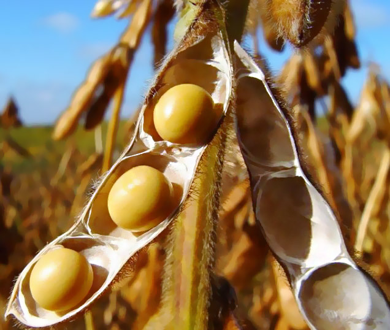

Como é a semente?


semente da soja
A época do plantio de soja varia de acordo com a região do país. Na região Sudeste, por exemplo, é de outubro a dezembro, enquanto na região Sul, de setembro a janeiro. Confira a época do plantio de soja por regiões: Região Norte: maio a junho e outubro a janeiro; Região Nordeste: outubro a janeiro; Região Centro-Oeste: setembro a dezembro; Região Sudeste: outubro a dezembro; Região Sul: setembro a janeiro.
A época em que é feito o plantio afeta a sua produtividade. Isso se justifica em razão de a soja ser um grão muito sensível. Por isso, o planejamento do plantio de soja é fundamental para que a lavoura tenha sucesso. Como falamos acima, o melhor período para cada semeadura varia de acordo com cada região do país. Como o Brasil é um país continental, com diferentes climas e biomas, cada região apresenta diferentes regimes de chuva, radiação solar, temperatura e umidade e tipo de solo. Por isso, a orientação geral é que, a cada entressafra, o agricultor já inicie o planejamento da plantação de sua próxima lavoura. O regime de chuvas acelera ou atrasa a semeadura, variando em cada região. As temperaturas mais baixas também causaram desenvolvimento inicial mais lento em algumas lavouras. Mas, de modo geral, o saldo é positivo.